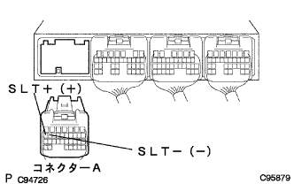

DTC P1760/77 Line pressure control linear SOL system |
| DTC No. | DTC detection conditions
| Inspection site |
| P1760/77 |
|
|
| Step 1 | Trans mission wire single inspection (SLT) |
 |
Cut the transmit sho -young wire connector.
Use a Toyota Electrical Tester to measure the resistance between the 3 (SLT+) ← → 8 (SLT-) terminals.
|
| ||||
| OK | |
| Step 2 | Wire harness and connector inspection (transmission wire-engine control computer) |
|  |
Connect the connector of the transmit sho -wire wire and separate the connector A of the engine controlled compilation.
Use a Toyota Electrical Tester to measure the resistance between A17 (SLT+) ← → A16 (SLT-) terminals.
(The terminal array isreference)
|
| ||||
| OK | ||
| ||
| Step 3 | Line pressure control Solenoid ASSY Single Inspection (SLT) |
Use a Toyota Electrical Tester to measure resistance between terminals.
|
| ||||
| OK | ||
| ||